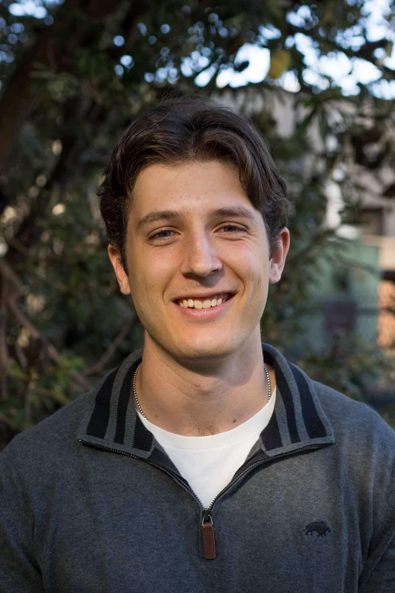
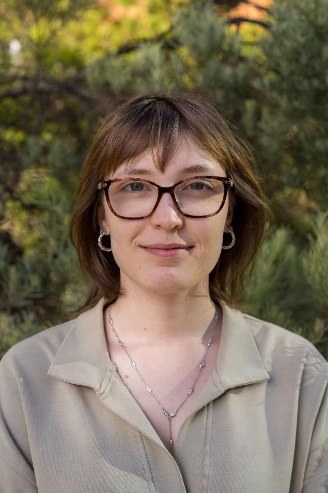
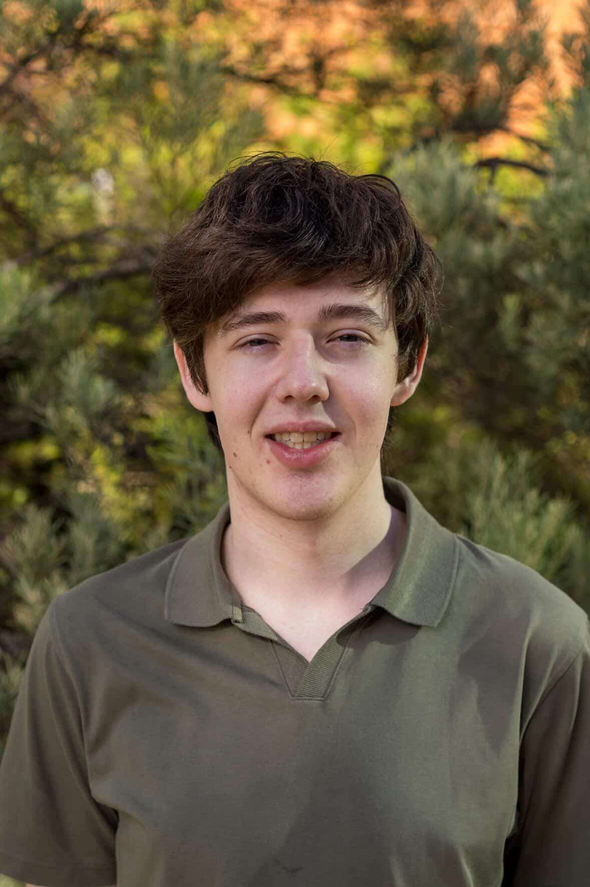

Meet the Team
I'm Ayush, a passionate final year bachelor of software engineering, software developer driven by a love for technology, innovation, and the power of impactful software.

Daniel de HaanI am a fourth year BSc Software Engineering student at ANU.
I am a 4th year studying Software Engineering at ANU as I love using programming to solve problems. I specialise in mechatronics, focusing on the integration of hardware and software systems.

Maya MoloneyI am a third year BSc Advanced Computing student at ANU who enjoys difficult puzzles and building impactful systems.
I'm a 4th year Software Engineering student interested in creating and optimising new, innovative, and impactful software.

Aden Remedios-ColeI am a fourth year Software Engineering student interested in parallel computing and philosophy
|
Prof John Taylor
Prof. John Taylor is a Professor in the School of Computing at the ANU's College of Systems and Society, and also serves as a Visiting Scientist at CSIRO. With extensive experience in high-performance computing, Dr Taylor collaborated with XENON in 2008 to develop one of the earliest NVIDIA GPU-based supercomputer clusters. Additionally, he has contributed to the global HPC community through his roles as a member of the Gordon Bell prize committee and as Chair of the Gordon Bell Climate prize committee. |